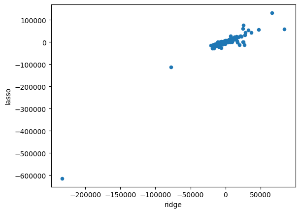

import pandas as pd
import numpy as np
from sklearn.pipeline import Pipeline
from sklearn.compose import make_column_selector, ColumnTransformer
from sklearn.preprocessing import StandardScaler, OneHotEncoder, PolynomialFeatures
from sklearn.linear_model import LinearRegression, Ridge, Lasso, ElasticNet
from sklearn.model_selection import train_test_split, cross_val_score
from sklearn.metrics import r2_scorePractice Activity 1
Make a pipeline that uses all the variables in the Ames dataset, and then fits Ridge Regression with lambda = 1
Cross-validate this pipeline and compare the results to the ordinary linear regression.
Then fit the model on the whole dataset and get the coefficients. Make a plot of these coefficients compared to the ones from ordinary linear regression.
# Read the data
ames = pd.read_csv("/content/AmesHousing (4).csv")
# Get rid of columns with mostly NaN values
good_cols = ames.isna().sum() < 100
ames = ames.loc[:,good_cols]
# Drop other NAs
ames = ames.dropna()X = ames.drop(["SalePrice", "Order", "PID"], axis = 1)
y = ames["SalePrice"]ct = ColumnTransformer(
[
("dummify",
OneHotEncoder(sparse_output = False, handle_unknown='ignore'),
make_column_selector(dtype_include=object)),
("standardize",
StandardScaler(),
make_column_selector(dtype_include=np.number))
],
remainder = "passthrough"
).set_output(transform="pandas")ct.fit(X)ColumnTransformer(remainder='passthrough',
transformers=[('dummify',
OneHotEncoder(handle_unknown='ignore',
sparse_output=False),
<sklearn.compose._column_transformer.make_column_selector object at 0x7b7579c089e0>),
('standardize', StandardScaler(),
<sklearn.compose._column_transformer.make_column_selector object at 0x7b7579b90f80>)])In a Jupyter environment, please rerun this cell to show the HTML representation or trust the notebook. On GitHub, the HTML representation is unable to render, please try loading this page with nbviewer.org.
ColumnTransformer(remainder='passthrough',
transformers=[('dummify',
OneHotEncoder(handle_unknown='ignore',
sparse_output=False),
<sklearn.compose._column_transformer.make_column_selector object at 0x7b7579c089e0>),
('standardize', StandardScaler(),
<sklearn.compose._column_transformer.make_column_selector object at 0x7b7579b90f80>)])<sklearn.compose._column_transformer.make_column_selector object at 0x7b7579c089e0>
OneHotEncoder(handle_unknown='ignore', sparse_output=False)
<sklearn.compose._column_transformer.make_column_selector object at 0x7b7579b90f80>
StandardScaler()
[]
passthrough
ct.transform(X)| dummify__MS Zoning_C (all) | dummify__MS Zoning_FV | dummify__MS Zoning_I (all) | dummify__MS Zoning_RH | dummify__MS Zoning_RL | dummify__MS Zoning_RM | dummify__Street_Grvl | dummify__Street_Pave | dummify__Lot Shape_IR1 | dummify__Lot Shape_IR2 | ... | standardize__Garage Area | standardize__Wood Deck SF | standardize__Open Porch SF | standardize__Enclosed Porch | standardize__3Ssn Porch | standardize__Screen Porch | standardize__Pool Area | standardize__Misc Val | standardize__Mo Sold | standardize__Yr Sold | |
|---|---|---|---|---|---|---|---|---|---|---|---|---|---|---|---|---|---|---|---|---|---|
| 0 | 0.0 | 0.0 | 0.0 | 0.0 | 1.0 | 0.0 | 0.0 | 1.0 | 1.0 | 0.0 | ... | 0.246615 | 0.896016 | 0.207098 | -0.356731 | -0.103521 | -0.288151 | -0.061399 | -0.087930 | -0.444404 | 1.675421 |
| 1 | 0.0 | 0.0 | 0.0 | 1.0 | 0.0 | 0.0 | 0.0 | 1.0 | 0.0 | 0.0 | ... | 1.189503 | 0.346175 | -0.713033 | -0.356731 | -0.103521 | 1.842908 | -0.061399 | -0.087930 | -0.076545 | 1.675421 |
| 2 | 0.0 | 0.0 | 0.0 | 0.0 | 1.0 | 0.0 | 0.0 | 1.0 | 1.0 | 0.0 | ... | -0.761621 | 2.333460 | -0.178763 | -0.356731 | -0.103521 | -0.288151 | -0.061399 | 21.738194 | -0.076545 | 1.675421 |
| 3 | 0.0 | 0.0 | 0.0 | 0.0 | 1.0 | 0.0 | 0.0 | 1.0 | 0.0 | 0.0 | ... | 0.218609 | -0.753509 | -0.713033 | -0.356731 | -0.103521 | -0.288151 | -0.061399 | -0.087930 | -0.812263 | 1.675421 |
| 4 | 0.0 | 0.0 | 0.0 | 0.0 | 1.0 | 0.0 | 0.0 | 1.0 | 1.0 | 0.0 | ... | 0.031898 | 0.911726 | -0.208445 | -0.356731 | -0.103521 | -0.288151 | -0.061399 | -0.087930 | -1.180122 | 1.675421 |
| ... | ... | ... | ... | ... | ... | ... | ... | ... | ... | ... | ... | ... | ... | ... | ... | ... | ... | ... | ... | ... | ... |
| 2925 | 0.0 | 0.0 | 0.0 | 0.0 | 1.0 | 0.0 | 0.0 | 1.0 | 1.0 | 0.0 | ... | 0.526681 | 0.189077 | -0.713033 | -0.356731 | -0.103521 | -0.288151 | -0.061399 | -0.087930 | -1.180122 | -1.358188 |
| 2926 | 0.0 | 0.0 | 0.0 | 0.0 | 1.0 | 0.0 | 0.0 | 1.0 | 1.0 | 0.0 | ... | 0.041234 | 0.534692 | -0.713033 | -0.356731 | -0.103521 | -0.288151 | -0.061399 | -0.087930 | -0.076545 | -1.358188 |
| 2927 | 0.0 | 0.0 | 0.0 | 0.0 | 1.0 | 0.0 | 0.0 | 1.0 | 0.0 | 0.0 | ... | -2.217962 | -0.125118 | -0.238126 | -0.356731 | -0.103521 | -0.288151 | -0.061399 | 1.134333 | 0.291314 | -1.358188 |
| 2928 | 0.0 | 0.0 | 0.0 | 0.0 | 1.0 | 0.0 | 0.0 | 1.0 | 0.0 | 0.0 | ... | -0.266838 | 1.131663 | -0.149082 | -0.356731 | -0.103521 | -0.288151 | -0.061399 | -0.087930 | -0.812263 | -1.358188 |
| 2929 | 0.0 | 0.0 | 0.0 | 0.0 | 1.0 | 0.0 | 0.0 | 1.0 | 0.0 | 0.0 | ... | 0.816082 | 0.738919 | -0.000673 | -0.356731 | -0.103521 | -0.288151 | -0.061399 | -0.087930 | 1.762750 | -1.358188 |
2821 rows × 254 columns
# fit the linear regression
lr_pipeline_1 = Pipeline(
[("preprocessing", ct),
("linear_regression", LinearRegression())]
)cross_val_score(lr_pipeline_1, X, y, cv=5, scoring='r2')array([0.89727873, 0.91038253, 0.78900365, 0.77208628, 0.9006982 ])lr_pipeline_1_fitted = lr_pipeline_1.fit(X, y)
lr_pipeline_1_fittedPipeline(steps=[('preprocessing',
ColumnTransformer(remainder='passthrough',
transformers=[('dummify',
OneHotEncoder(handle_unknown='ignore',
sparse_output=False),
<sklearn.compose._column_transformer.make_column_selector object at 0x7b7579c089e0>),
('standardize',
StandardScaler(),
<sklearn.compose._column_transformer.make_column_selector object at 0x7b7579b90f80>)])),
('linear_regression', LinearRegression())])In a Jupyter environment, please rerun this cell to show the HTML representation or trust the notebook. On GitHub, the HTML representation is unable to render, please try loading this page with nbviewer.org.
Pipeline(steps=[('preprocessing',
ColumnTransformer(remainder='passthrough',
transformers=[('dummify',
OneHotEncoder(handle_unknown='ignore',
sparse_output=False),
<sklearn.compose._column_transformer.make_column_selector object at 0x7b7579c089e0>),
('standardize',
StandardScaler(),
<sklearn.compose._column_transformer.make_column_selector object at 0x7b7579b90f80>)])),
('linear_regression', LinearRegression())])ColumnTransformer(remainder='passthrough',
transformers=[('dummify',
OneHotEncoder(handle_unknown='ignore',
sparse_output=False),
<sklearn.compose._column_transformer.make_column_selector object at 0x7b7579c089e0>),
('standardize', StandardScaler(),
<sklearn.compose._column_transformer.make_column_selector object at 0x7b7579b90f80>)])<sklearn.compose._column_transformer.make_column_selector object at 0x7b7579c089e0>
OneHotEncoder(handle_unknown='ignore', sparse_output=False)
<sklearn.compose._column_transformer.make_column_selector object at 0x7b7579b90f80>
StandardScaler()
[]
passthrough
LinearRegression()
# fit the ridge regression
ridge_pipeline = Pipeline(
[("preprocessing", ct),
("ridge_regression", Ridge(alpha=1))]
)cross_val_score(ridge_pipeline, X, y, cv=5, scoring='r2')array([0.89815807, 0.91744024, 0.79493606, 0.78522563, 0.91389818])ridge_pipeline_fitted = ridge_pipeline.fit(X, y)
ridge_pipeline_fittedPipeline(steps=[('preprocessing',
ColumnTransformer(remainder='passthrough',
transformers=[('dummify',
OneHotEncoder(handle_unknown='ignore',
sparse_output=False),
<sklearn.compose._column_transformer.make_column_selector object at 0x7b75ad2a8770>),
('standardize',
StandardScaler(),
<sklearn.compose._column_transformer.make_column_selector object at 0x7b75821bdb80>)])),
('ridge_regression', Ridge(alpha=1))])In a Jupyter environment, please rerun this cell to show the HTML representation or trust the notebook. On GitHub, the HTML representation is unable to render, please try loading this page with nbviewer.org.
Pipeline(steps=[('preprocessing',
ColumnTransformer(remainder='passthrough',
transformers=[('dummify',
OneHotEncoder(handle_unknown='ignore',
sparse_output=False),
<sklearn.compose._column_transformer.make_column_selector object at 0x7b75ad2a8770>),
('standardize',
StandardScaler(),
<sklearn.compose._column_transformer.make_column_selector object at 0x7b75821bdb80>)])),
('ridge_regression', Ridge(alpha=1))])ColumnTransformer(remainder='passthrough',
transformers=[('dummify',
OneHotEncoder(handle_unknown='ignore',
sparse_output=False),
<sklearn.compose._column_transformer.make_column_selector object at 0x7b75ad2a8770>),
('standardize', StandardScaler(),
<sklearn.compose._column_transformer.make_column_selector object at 0x7b75821bdb80>)])<sklearn.compose._column_transformer.make_column_selector object at 0x7b75ad2a8770>
OneHotEncoder(handle_unknown='ignore', sparse_output=False)
<sklearn.compose._column_transformer.make_column_selector object at 0x7b75821bdb80>
StandardScaler()
[]
passthrough
Ridge(alpha=1)
coef_compare = pd.DataFrame()
coef_compare["lr"] = lr_pipeline_1.named_steps['linear_regression'].coef_
coef_compare['ridge'] = ridge_pipeline_fitted.named_steps['ridge_regression'].coef_# compare results to ordinary linear regression
coef_compare["diff"] = coef_compare["lr"] - coef_compare["ridge"]
coef_compare.sort_values(by="diff")| lr | ridge | diff | |
|---|---|---|---|
| 91 | -559653.342134 | -233156.089658 | -326497.252476 |
| 68 | -113384.181772 | -77996.160321 | -35388.021451 |
| 106 | -33825.937758 | -16633.220977 | -17192.716782 |
| 85 | -20968.886474 | -6399.635769 | -14569.250704 |
| 124 | -17416.886121 | -6826.403541 | -10590.482579 |
| ... | ... | ... | ... |
| 95 | 55399.766568 | 16828.505080 | 38571.261487 |
| 69 | 64910.291903 | 24567.527777 | 40342.764126 |
| 37 | 127054.304996 | 66530.685838 | 60523.619159 |
| 94 | 109059.255835 | 28387.663156 | 80671.592679 |
| 93 | 119504.966230 | 32582.552859 | 86922.413371 |
254 rows × 3 columns
from sklearn.model_selection import GridSearchCV
ridge_pipeline_1 = Pipeline(
[("preprocessing", ct),
("ridge_regression", Ridge())]
).set_output(transform="pandas")
alphas = {'ridge_regression__alpha': np.array([.001, .01, .1, 1, 10, 100])}
gscv = GridSearchCV(ridge_pipeline_1, param_grid=alphas, cv=5, scoring='r2')
gscv_fitted = gscv.fit(X, y)
display(gscv_fitted.cv_results_){'mean_fit_time': array([0.16375866, 0.14161735, 0.19152446, 0.24866939, 0.29116106,
0.1399754 ]),
'std_fit_time': array([0.04699832, 0.01912782, 0.01942644, 0.06130952, 0.04244537,
0.04509786]),
'mean_score_time': array([0.06252923, 0.07018275, 0.08041701, 0.12419038, 0.11840262,
0.0565506 ]),
'std_score_time': array([0.01766386, 0.02007759, 0.02299862, 0.02317715, 0.0113207 ,
0.01930325]),
'param_ridge_regression__alpha': masked_array(data=[0.001, 0.01, 0.1, 1.0, 10.0, 100.0],
mask=[False, False, False, False, False, False],
fill_value=1e+20),
'params': [{'ridge_regression__alpha': np.float64(0.001)},
{'ridge_regression__alpha': np.float64(0.01)},
{'ridge_regression__alpha': np.float64(0.1)},
{'ridge_regression__alpha': np.float64(1.0)},
{'ridge_regression__alpha': np.float64(10.0)},
{'ridge_regression__alpha': np.float64(100.0)}],
'split0_test_score': array([0.8972854 , 0.89734306, 0.89774358, 0.89815807, 0.8977621 ,
0.88776492]),
'split1_test_score': array([0.91040618, 0.91061417, 0.91230557, 0.91744024, 0.92081211,
0.92197931]),
'split2_test_score': array([0.78901601, 0.7891259 , 0.79010977, 0.79493606, 0.80057243,
0.79341952]),
'split3_test_score': array([0.7721318 , 0.77253192, 0.77576412, 0.78522563, 0.78711955,
0.77214935]),
'split4_test_score': array([0.90076168, 0.90131686, 0.90558729, 0.91389818, 0.91509487,
0.91355403]),
'mean_test_score': array([0.85392021, 0.85418638, 0.85630206, 0.86193163, 0.86427221,
0.85777342]),
'std_test_score': array([0.06027807, 0.06027967, 0.06025049, 0.05910381, 0.0581575 ,
0.06261991]),
'rank_test_score': array([6, 5, 4, 2, 1, 3], dtype=int32)}coef_compare.plot.scatter(x='lr', y='ridge')
# create a LASSO pipeline, and tune lambda
# Fit your best model on the full AMES data, and compare the coefficients to Ridge and OLS
lasso_pipeline = Pipeline(
[("preprocessing", ct),
("lasso_regression", Lasso(alpha=1))]
)cross_val_score(lasso_pipeline, X, y, cv=5, scoring='r2')/usr/local/lib/python3.12/dist-packages/sklearn/linear_model/_coordinate_descent.py:695: ConvergenceWarning: Objective did not converge. You might want to increase the number of iterations, check the scale of the features or consider increasing regularisation. Duality gap: 2.323e+10, tolerance: 1.477e+09
model = cd_fast.enet_coordinate_descent(array([0.89774385, 0.91093785, 0.79691806, 0.77426245, 0.90589888])lasso_pipeline_fitted = lasso_pipeline.fit(X,y)
lasso_pipeline_fittedPipeline(steps=[('preprocessing',
ColumnTransformer(remainder='passthrough',
transformers=[('dummify',
OneHotEncoder(handle_unknown='ignore',
sparse_output=False),
<sklearn.compose._column_transformer.make_column_selector object at 0x7b7579c089e0>),
('standardize',
StandardScaler(),
<sklearn.compose._column_transformer.make_column_selector object at 0x7b7579b90f80>)])),
('lasso_regression', Lasso(alpha=1))])In a Jupyter environment, please rerun this cell to show the HTML representation or trust the notebook. On GitHub, the HTML representation is unable to render, please try loading this page with nbviewer.org.
Pipeline(steps=[('preprocessing',
ColumnTransformer(remainder='passthrough',
transformers=[('dummify',
OneHotEncoder(handle_unknown='ignore',
sparse_output=False),
<sklearn.compose._column_transformer.make_column_selector object at 0x7b7579c089e0>),
('standardize',
StandardScaler(),
<sklearn.compose._column_transformer.make_column_selector object at 0x7b7579b90f80>)])),
('lasso_regression', Lasso(alpha=1))])ColumnTransformer(remainder='passthrough',
transformers=[('dummify',
OneHotEncoder(handle_unknown='ignore',
sparse_output=False),
<sklearn.compose._column_transformer.make_column_selector object at 0x7b7579c089e0>),
('standardize', StandardScaler(),
<sklearn.compose._column_transformer.make_column_selector object at 0x7b7579b90f80>)])<sklearn.compose._column_transformer.make_column_selector object at 0x7b7579c089e0>
OneHotEncoder(handle_unknown='ignore', sparse_output=False)
<sklearn.compose._column_transformer.make_column_selector object at 0x7b7579b90f80>
StandardScaler()
[]
passthrough
Lasso(alpha=1)
coef_compare["lasso"] = lasso_pipeline_fitted.named_steps['lasso_regression'].coef_
coef_compare['lasso_diff'] = coef_compare['ridge'] - coef_compare['lasso']coef_compare.sort_values(by='lasso_diff')| lr | ridge | diff | lasso | lasso_diff | |
|---|---|---|---|---|---|
| 37 | 127054.304996 | 66530.685838 | 60523.619159 | 132015.733845 | -65485.048008 |
| 109 | 37584.951869 | 25708.646790 | 11876.305079 | 76167.305679 | -50458.658888 |
| 69 | 64910.291903 | 24567.527777 | 40342.764126 | 60878.855589 | -36311.327812 |
| 93 | 119504.966230 | 32582.552859 | 86922.413371 | 54108.861642 | -21526.308783 |
| 191 | 19582.112743 | 7495.507740 | 12086.605003 | 26430.977114 | -18935.469375 |
| ... | ... | ... | ... | ... | ... |
| 126 | 37584.951869 | 25708.646790 | 11876.305079 | 623.765038 | 25084.881752 |
| 97 | 47803.911563 | 19929.205625 | 27874.705939 | -11656.796622 | 31586.002247 |
| 68 | -113384.181772 | -77996.160321 | -35388.021451 | -111624.851127 | 33628.690806 |
| 92 | 47815.565877 | 26802.263636 | 21013.302241 | -11572.161484 | 38374.425120 |
| 91 | -559653.342134 | -233156.089658 | -326497.252476 | -614586.359691 | 381430.270032 |
254 rows × 5 columns
coef_compare.plot.scatter(x='ridge', y='lasso')
lasso_pipeline_1 = Pipeline(
[('preprocessing', ct),
('lasso_regression', Lasso())]
).set_output(transform='pandas')
alphas = {'lasso_regression__alpha': np.array([100, 10, 1, 0.1, 0.01])}
gscv = GridSearchCV(lasso_pipeline_1, param_grid=alphas, cv=5, scoring='r2')gscv_fitted = gscv.fit(X,y)
gscv_fitted.cv_results_/usr/local/lib/python3.12/dist-packages/sklearn/linear_model/_coordinate_descent.py:695: ConvergenceWarning: Objective did not converge. You might want to increase the number of iterations, check the scale of the features or consider increasing regularisation. Duality gap: 2.323e+10, tolerance: 1.477e+09
model = cd_fast.enet_coordinate_descent(
/usr/local/lib/python3.12/dist-packages/sklearn/linear_model/_coordinate_descent.py:695: ConvergenceWarning: Objective did not converge. You might want to increase the number of iterations, check the scale of the features or consider increasing regularisation. Duality gap: 2.236e+11, tolerance: 1.348e+09
model = cd_fast.enet_coordinate_descent(
/usr/local/lib/python3.12/dist-packages/sklearn/linear_model/_coordinate_descent.py:695: ConvergenceWarning: Objective did not converge. You might want to increase the number of iterations, check the scale of the features or consider increasing regularisation. Duality gap: 1.570e+11, tolerance: 1.474e+09
model = cd_fast.enet_coordinate_descent(
/usr/local/lib/python3.12/dist-packages/sklearn/linear_model/_coordinate_descent.py:695: ConvergenceWarning: Objective did not converge. You might want to increase the number of iterations, check the scale of the features or consider increasing regularisation. Duality gap: 1.588e+11, tolerance: 1.463e+09
model = cd_fast.enet_coordinate_descent(
/usr/local/lib/python3.12/dist-packages/sklearn/linear_model/_coordinate_descent.py:695: ConvergenceWarning: Objective did not converge. You might want to increase the number of iterations, check the scale of the features or consider increasing regularisation. Duality gap: 1.698e+11, tolerance: 1.407e+09
model = cd_fast.enet_coordinate_descent(
/usr/local/lib/python3.12/dist-packages/sklearn/linear_model/_coordinate_descent.py:695: ConvergenceWarning: Objective did not converge. You might want to increase the number of iterations, check the scale of the features or consider increasing regularisation. Duality gap: 2.557e+11, tolerance: 1.477e+09
model = cd_fast.enet_coordinate_descent(
/usr/local/lib/python3.12/dist-packages/sklearn/linear_model/_coordinate_descent.py:695: ConvergenceWarning: Objective did not converge. You might want to increase the number of iterations, check the scale of the features or consider increasing regularisation. Duality gap: 2.110e+11, tolerance: 1.348e+09
model = cd_fast.enet_coordinate_descent(
/usr/local/lib/python3.12/dist-packages/sklearn/linear_model/_coordinate_descent.py:695: ConvergenceWarning: Objective did not converge. You might want to increase the number of iterations, check the scale of the features or consider increasing regularisation. Duality gap: 2.466e+11, tolerance: 1.474e+09
model = cd_fast.enet_coordinate_descent(
/usr/local/lib/python3.12/dist-packages/sklearn/linear_model/_coordinate_descent.py:695: ConvergenceWarning: Objective did not converge. You might want to increase the number of iterations, check the scale of the features or consider increasing regularisation. Duality gap: 1.988e+11, tolerance: 1.463e+09
model = cd_fast.enet_coordinate_descent(
/usr/local/lib/python3.12/dist-packages/sklearn/linear_model/_coordinate_descent.py:695: ConvergenceWarning: Objective did not converge. You might want to increase the number of iterations, check the scale of the features or consider increasing regularisation. Duality gap: 1.757e+11, tolerance: 1.407e+09
model = cd_fast.enet_coordinate_descent(
/usr/local/lib/python3.12/dist-packages/sklearn/linear_model/_coordinate_descent.py:695: ConvergenceWarning: Objective did not converge. You might want to increase the number of iterations, check the scale of the features or consider increasing regularisation. Duality gap: 2.456e+11, tolerance: 1.477e+09
model = cd_fast.enet_coordinate_descent({'mean_fit_time': array([0.40139451, 0.71024499, 2.09151268, 2.58159127, 2.93801455]),
'std_fit_time': array([0.06040713, 0.36998923, 0.53071445, 0.86580273, 0.72285388]),
'mean_score_time': array([0.07270784, 0.07161121, 0.06407185, 0.0696146 , 0.07361135]),
'std_score_time': array([0.0254371 , 0.02595391, 0.03473434, 0.02501026, 0.02674645]),
'param_lasso_regression__alpha': masked_array(data=[100.0, 10.0, 1.0, 0.1, 0.01],
mask=[False, False, False, False, False],
fill_value=1e+20),
'params': [{'lasso_regression__alpha': np.float64(100.0)},
{'lasso_regression__alpha': np.float64(10.0)},
{'lasso_regression__alpha': np.float64(1.0)},
{'lasso_regression__alpha': np.float64(0.1)},
{'lasso_regression__alpha': np.float64(0.01)}],
'split0_test_score': array([0.90180018, 0.90077569, 0.89774385, 0.89725821, 0.89720561]),
'split1_test_score': array([0.92443329, 0.91506699, 0.91093785, 0.91045103, 0.91040134]),
'split2_test_score': array([0.80538971, 0.80141962, 0.79691806, 0.79595065, 0.79085941]),
'split3_test_score': array([0.78348547, 0.77664916, 0.77426245, 0.77407171, 0.77406031]),
'split4_test_score': array([0.91954689, 0.90924976, 0.90589888, 0.90535981, 0.90550225]),
'mean_test_score': array([0.86693111, 0.86063224, 0.85715222, 0.85661828, 0.85560578]),
'std_test_score': array([0.06006878, 0.05915673, 0.0590181 , 0.05902508, 0.06010743]),
'rank_test_score': array([1, 2, 3, 4, 5], dtype=int32)}# create an elastic net pipeline and tune lambda and alpha
# fit your best model on the full ames data, and compare the coefficients to Ridge and OLS
from sklearn.model_selection import GridSearchCV
elastic_pipeline_1 = Pipeline(
[("preprocessing", ct),
("elastic_net", ElasticNet())]
).set_output(transform="pandas")
param_grid = {
"elastic_net__alpha": [1,10,100],
"elastic_net__l1_ratio": np.arange(0.0, 1.2, 0.2)
}
gscv = GridSearchCV(elastic_pipeline_1, param_grid=param_grid, cv=5, scoring='r2')gscv_fitted = gscv.fit(X,y)
gscv_fitted.cv_results_/usr/local/lib/python3.12/dist-packages/sklearn/linear_model/_coordinate_descent.py:695: ConvergenceWarning: Objective did not converge. You might want to increase the number of iterations, check the scale of the features or consider increasing regularisation. Duality gap: 1.919e+12, tolerance: 1.348e+09 Linear regression models with null weight for the l1 regularization term are more efficiently fitted using one of the solvers implemented in sklearn.linear_model.Ridge/RidgeCV instead.
model = cd_fast.enet_coordinate_descent(
/usr/local/lib/python3.12/dist-packages/sklearn/linear_model/_coordinate_descent.py:695: ConvergenceWarning: Objective did not converge. You might want to increase the number of iterations, check the scale of the features or consider increasing regularisation. Duality gap: 2.089e+12, tolerance: 1.474e+09 Linear regression models with null weight for the l1 regularization term are more efficiently fitted using one of the solvers implemented in sklearn.linear_model.Ridge/RidgeCV instead.
model = cd_fast.enet_coordinate_descent(
/usr/local/lib/python3.12/dist-packages/sklearn/linear_model/_coordinate_descent.py:695: ConvergenceWarning: Objective did not converge. You might want to increase the number of iterations, check the scale of the features or consider increasing regularisation. Duality gap: 1.921e+12, tolerance: 1.463e+09 Linear regression models with null weight for the l1 regularization term are more efficiently fitted using one of the solvers implemented in sklearn.linear_model.Ridge/RidgeCV instead.
model = cd_fast.enet_coordinate_descent(
/usr/local/lib/python3.12/dist-packages/sklearn/linear_model/_coordinate_descent.py:695: ConvergenceWarning: Objective did not converge. You might want to increase the number of iterations, check the scale of the features or consider increasing regularisation. Duality gap: 1.790e+12, tolerance: 1.407e+09 Linear regression models with null weight for the l1 regularization term are more efficiently fitted using one of the solvers implemented in sklearn.linear_model.Ridge/RidgeCV instead.
model = cd_fast.enet_coordinate_descent(
/usr/local/lib/python3.12/dist-packages/sklearn/linear_model/_coordinate_descent.py:695: ConvergenceWarning: Objective did not converge. You might want to increase the number of iterations, check the scale of the features or consider increasing regularisation. Duality gap: 2.074e+12, tolerance: 1.477e+09 Linear regression models with null weight for the l1 regularization term are more efficiently fitted using one of the solvers implemented in sklearn.linear_model.Ridge/RidgeCV instead.
model = cd_fast.enet_coordinate_descent(
/usr/local/lib/python3.12/dist-packages/sklearn/linear_model/_coordinate_descent.py:695: ConvergenceWarning: Objective did not converge. You might want to increase the number of iterations, check the scale of the features or consider increasing regularisation. Duality gap: 2.323e+10, tolerance: 1.477e+09
model = cd_fast.enet_coordinate_descent(
/usr/local/lib/python3.12/dist-packages/sklearn/linear_model/_coordinate_descent.py:695: ConvergenceWarning: Objective did not converge. You might want to increase the number of iterations, check the scale of the features or consider increasing regularisation. Duality gap: 4.468e+12, tolerance: 1.348e+09 Linear regression models with null weight for the l1 regularization term are more efficiently fitted using one of the solvers implemented in sklearn.linear_model.Ridge/RidgeCV instead.
model = cd_fast.enet_coordinate_descent(
/usr/local/lib/python3.12/dist-packages/sklearn/linear_model/_coordinate_descent.py:695: ConvergenceWarning: Objective did not converge. You might want to increase the number of iterations, check the scale of the features or consider increasing regularisation. Duality gap: 4.860e+12, tolerance: 1.474e+09 Linear regression models with null weight for the l1 regularization term are more efficiently fitted using one of the solvers implemented in sklearn.linear_model.Ridge/RidgeCV instead.
model = cd_fast.enet_coordinate_descent(
/usr/local/lib/python3.12/dist-packages/sklearn/linear_model/_coordinate_descent.py:695: ConvergenceWarning: Objective did not converge. You might want to increase the number of iterations, check the scale of the features or consider increasing regularisation. Duality gap: 4.754e+12, tolerance: 1.463e+09 Linear regression models with null weight for the l1 regularization term are more efficiently fitted using one of the solvers implemented in sklearn.linear_model.Ridge/RidgeCV instead.
model = cd_fast.enet_coordinate_descent(
/usr/local/lib/python3.12/dist-packages/sklearn/linear_model/_coordinate_descent.py:695: ConvergenceWarning: Objective did not converge. You might want to increase the number of iterations, check the scale of the features or consider increasing regularisation. Duality gap: 4.545e+12, tolerance: 1.407e+09 Linear regression models with null weight for the l1 regularization term are more efficiently fitted using one of the solvers implemented in sklearn.linear_model.Ridge/RidgeCV instead.
model = cd_fast.enet_coordinate_descent(
/usr/local/lib/python3.12/dist-packages/sklearn/linear_model/_coordinate_descent.py:695: ConvergenceWarning: Objective did not converge. You might want to increase the number of iterations, check the scale of the features or consider increasing regularisation. Duality gap: 4.857e+12, tolerance: 1.477e+09 Linear regression models with null weight for the l1 regularization term are more efficiently fitted using one of the solvers implemented in sklearn.linear_model.Ridge/RidgeCV instead.
model = cd_fast.enet_coordinate_descent(
/usr/local/lib/python3.12/dist-packages/sklearn/linear_model/_coordinate_descent.py:695: ConvergenceWarning: Objective did not converge. You might want to increase the number of iterations, check the scale of the features or consider increasing regularisation. Duality gap: 6.372e+12, tolerance: 1.348e+09 Linear regression models with null weight for the l1 regularization term are more efficiently fitted using one of the solvers implemented in sklearn.linear_model.Ridge/RidgeCV instead.
model = cd_fast.enet_coordinate_descent(
/usr/local/lib/python3.12/dist-packages/sklearn/linear_model/_coordinate_descent.py:695: ConvergenceWarning: Objective did not converge. You might want to increase the number of iterations, check the scale of the features or consider increasing regularisation. Duality gap: 6.960e+12, tolerance: 1.474e+09 Linear regression models with null weight for the l1 regularization term are more efficiently fitted using one of the solvers implemented in sklearn.linear_model.Ridge/RidgeCV instead.
model = cd_fast.enet_coordinate_descent(
/usr/local/lib/python3.12/dist-packages/sklearn/linear_model/_coordinate_descent.py:695: ConvergenceWarning: Objective did not converge. You might want to increase the number of iterations, check the scale of the features or consider increasing regularisation. Duality gap: 6.894e+12, tolerance: 1.463e+09 Linear regression models with null weight for the l1 regularization term are more efficiently fitted using one of the solvers implemented in sklearn.linear_model.Ridge/RidgeCV instead.
model = cd_fast.enet_coordinate_descent(
/usr/local/lib/python3.12/dist-packages/sklearn/linear_model/_coordinate_descent.py:695: ConvergenceWarning: Objective did not converge. You might want to increase the number of iterations, check the scale of the features or consider increasing regularisation. Duality gap: 6.630e+12, tolerance: 1.407e+09 Linear regression models with null weight for the l1 regularization term are more efficiently fitted using one of the solvers implemented in sklearn.linear_model.Ridge/RidgeCV instead.
model = cd_fast.enet_coordinate_descent(
/usr/local/lib/python3.12/dist-packages/sklearn/linear_model/_coordinate_descent.py:695: ConvergenceWarning: Objective did not converge. You might want to increase the number of iterations, check the scale of the features or consider increasing regularisation. Duality gap: 6.971e+12, tolerance: 1.477e+09 Linear regression models with null weight for the l1 regularization term are more efficiently fitted using one of the solvers implemented in sklearn.linear_model.Ridge/RidgeCV instead.
model = cd_fast.enet_coordinate_descent({'mean_fit_time': array([3.42220364, 0.27460289, 0.21480312, 0.21069226, 0.29209232,
2.72812395, 3.29640222, 0.15772152, 0.34356151, 0.17528014,
0.1513576 , 0.74511242, 3.43039827, 0.15041952, 0.22287641,
0.18444881, 0.12534966, 0.44294925]),
'std_fit_time': array([0.61155173, 0.05378518, 0.03860715, 0.03569572, 0.03819036,
0.80719022, 0.76489937, 0.05670829, 0.12368319, 0.0162683 ,
0.02675537, 0.37464159, 0.6729911 , 0.04590496, 0.03512918,
0.03764724, 0.00919275, 0.07450052]),
'mean_score_time': array([0.08217459, 0.08053436, 0.06559005, 0.08486066, 0.08035026,
0.07495041, 0.12269559, 0.10281606, 0.12232819, 0.11016469,
0.06245599, 0.07186174, 0.06352315, 0.06031179, 0.11240101,
0.11714435, 0.07122951, 0.08802309]),
'std_score_time': array([0.02841099, 0.03902797, 0.02753174, 0.02584784, 0.03348041,
0.01025995, 0.0338248 , 0.06539842, 0.02899111, 0.0166487 ,
0.02878059, 0.01981154, 0.01958686, 0.01114255, 0.03826544,
0.00960103, 0.0251227 , 0.02786164]),
'param_elastic_net__alpha': masked_array(data=[1, 1, 1, 1, 1, 1, 10, 10, 10, 10, 10, 10, 100, 100,
100, 100, 100, 100],
mask=[False, False, False, False, False, False, False, False,
False, False, False, False, False, False, False, False,
False, False],
fill_value=999999),
'param_elastic_net__l1_ratio': masked_array(data=[0.0, 0.2, 0.4, 0.6000000000000001, 0.8, 1.0, 0.0, 0.2,
0.4, 0.6000000000000001, 0.8, 1.0, 0.0, 0.2, 0.4,
0.6000000000000001, 0.8, 1.0],
mask=[False, False, False, False, False, False, False, False,
False, False, False, False, False, False, False, False,
False, False],
fill_value=1e+20),
'params': [{'elastic_net__alpha': 1,
'elastic_net__l1_ratio': np.float64(0.0)},
{'elastic_net__alpha': 1, 'elastic_net__l1_ratio': np.float64(0.2)},
{'elastic_net__alpha': 1, 'elastic_net__l1_ratio': np.float64(0.4)},
{'elastic_net__alpha': 1,
'elastic_net__l1_ratio': np.float64(0.6000000000000001)},
{'elastic_net__alpha': 1, 'elastic_net__l1_ratio': np.float64(0.8)},
{'elastic_net__alpha': 1, 'elastic_net__l1_ratio': np.float64(1.0)},
{'elastic_net__alpha': 10, 'elastic_net__l1_ratio': np.float64(0.0)},
{'elastic_net__alpha': 10, 'elastic_net__l1_ratio': np.float64(0.2)},
{'elastic_net__alpha': 10, 'elastic_net__l1_ratio': np.float64(0.4)},
{'elastic_net__alpha': 10,
'elastic_net__l1_ratio': np.float64(0.6000000000000001)},
{'elastic_net__alpha': 10, 'elastic_net__l1_ratio': np.float64(0.8)},
{'elastic_net__alpha': 10, 'elastic_net__l1_ratio': np.float64(1.0)},
{'elastic_net__alpha': 100, 'elastic_net__l1_ratio': np.float64(0.0)},
{'elastic_net__alpha': 100, 'elastic_net__l1_ratio': np.float64(0.2)},
{'elastic_net__alpha': 100, 'elastic_net__l1_ratio': np.float64(0.4)},
{'elastic_net__alpha': 100,
'elastic_net__l1_ratio': np.float64(0.6000000000000001)},
{'elastic_net__alpha': 100, 'elastic_net__l1_ratio': np.float64(0.8)},
{'elastic_net__alpha': 100, 'elastic_net__l1_ratio': np.float64(1.0)}],
'split0_test_score': array([0.81931 , 0.83046991, 0.84222231, 0.85498397, 0.86998452,
0.89774385, 0.49251124, 0.54397792, 0.60547013, 0.6793558 ,
0.76799471, 0.90077569, 0.06860178, 0.0907623 , 0.12539237,
0.18706498, 0.32693083, 0.90180018]),
'split1_test_score': array([0.87347017, 0.88165863, 0.89026948, 0.89970861, 0.910922 ,
0.91093785, 0.57834351, 0.63033026, 0.69047024, 0.75911051,
0.83431921, 0.91506699, 0.11453298, 0.13989851, 0.17934406,
0.24897071, 0.4034672 , 0.92443329]),
'split2_test_score': array([0.77553836, 0.77886564, 0.78171869, 0.78409182, 0.7864665 ,
0.79691806, 0.54116063, 0.58761311, 0.64012622, 0.69746963,
0.75348534, 0.80141962, 0.10792402, 0.13209449, 0.16960845,
0.23558381, 0.38058074, 0.80538971]),
'split3_test_score': array([0.73451873, 0.73907377, 0.7437116 , 0.74889852, 0.7564174 ,
0.77426245, 0.50539133, 0.54915399, 0.59895872, 0.65403929,
0.70980028, 0.77664916, 0.10294585, 0.1252323 , 0.1598505 ,
0.2208233 , 0.35530277, 0.78348547]),
'split4_test_score': array([0.85782245, 0.86661817, 0.8760215 , 0.88649791, 0.89922134,
0.90589888, 0.56397157, 0.61521591, 0.67448987, 0.74225651,
0.81729388, 0.90924976, 0.10564 , 0.13075171, 0.16979416,
0.23868218, 0.39139693, 0.91954689]),
'mean_test_score': array([0.81213194, 0.81933722, 0.82678872, 0.83483617, 0.84460235,
0.85715222, 0.53627566, 0.58525824, 0.64190303, 0.70644635,
0.77657868, 0.86063224, 0.09992892, 0.12374786, 0.16079791,
0.226225 , 0.37153569, 0.86693111]),
'std_test_score': array([0.05150617, 0.05352299, 0.05590167, 0.05872575, 0.06193892,
0.0590181 , 0.0329539 , 0.0344734 , 0.03631915, 0.0390304 ,
0.04485095, 0.05915673, 0.01612643, 0.01714535, 0.01874549,
0.02155375, 0.02738249, 0.06006878]),
'rank_test_score': array([ 8, 7, 6, 5, 4, 3, 13, 12, 11, 10, 9, 2, 18, 17, 16, 15, 14,
1], dtype=int32)}y_pred = gscv_fitted.predict(X)target = pd.DataFrame()
target["actual"] = y
target["predicted"] = y_pred
target| actual | predicted | |
|---|---|---|
| 0 | 215000 | 218388.243679 |
| 1 | 105000 | 117726.828123 |
| 2 | 172000 | 65809.498269 |
| 3 | 244000 | 274770.257070 |
| 4 | 189900 | 179516.735946 |
| ... | ... | ... |
| 2925 | 142500 | 158534.160801 |
| 2926 | 131000 | 138474.266725 |
| 2927 | 132000 | 107452.537001 |
| 2928 | 170000 | 176715.713297 |
| 2929 | 188000 | 229933.488595 |
2821 rows × 2 columns